⛏️ MINECRAFT HISTÓRIA
ESTA PÁGINA FOI CRIADA PARA CONTAR TODA A HISTÓRIA DO LENDÁRIO JOGO DE BLOCOS
📦 FATOS RÁPIDOS:
- Criador: Markus "Notch" Persson
- Desenvolvedora: Mojang Studios (agora da Microsoft)
- Primeira versão: 17 de maio de 2009 (Classic)
- Lançamento oficial: 18 de novembro de 2011
- Jogo mais vendido: +300 milhões de cópias
- Gênero: Sandbox, Sobrevivência
* Esta é uma página de demonstração. Clique no botão para ver a mensagem de boas-vindas.
O COMEÇO (CLASSIC)
Markus "Notch" Persson começou a desenvolver Minecraft (originalmente chamado "Cave Game"). Em 17 de maio de 2009, a primeira versão pública "Classic" foi lançada. O jogo girava em torno de colocar e quebrar blocos cúbicos.
VERSÃO ALFA E BETA
Minecraft entrou em fase Alpha e depois Beta. Novos recursos foram adicionados: mobs, ferramentas, o modo Sobrevivência e os infames Creepers. O jogo ganhou enorme popularidade viral.
LANÇAMENTO OFICIAL
Em 18 de novembro de 2011, Minecraft foi oficialmente lançado na MineCon 2011. A versão 1.0 foi disponibilizada ao público, marcando o fim do Beta e o início da era moderna do jogo.
MULTIPLATAFORMA
Minecraft foi lançado para Xbox 360 em 2012, expandindo o jogo para consoles. A versão Pocket Edition (mobile) também ganhou força, tornando o jogo acessível em qualquer lugar.
MICROSOFT COMPRA A MOJANG
Em 15 de setembro de 2014, a Microsoft anunciou a aquisição da Mojang por US$ 2,5 bilhões. Notch deixou a empresa, e o jogo passou a ser gerenciado pela Microsoft.
MINECRAFT 10 ANOS + WINDOWS 10
Minecraft ultrapassou 100 milhões de cópias vendidas. A edição Windows 10 foi lançada, otimizada para melhor desempenho e compatível com o Windows 10.
UPDATE AQUATIC
A atualização Aquatic trouxe oceanos totalmente novos, com golfinhos, tartarugas, ruínas subaquáticas e o épico templo do oceano. O mundo subaquático de Minecraft foi completamente renovado.
CAVES & CLIFFS
Uma das maiores atualizações da história, com cavernas gigantes, montanhas imponentes, esmeraldas, cobre e novos mobs como o Axolote e o Goat. O sistema de geração de mundo foi reformulado.
UPDATE CAVES & CLIFFS PART 2
A segunda parte trouxe o novo mundo subterrâneo com deepslate, minérios gigantes e o Warden, um ser cego que habita as profundezas escuras. A mineração nunca foi tão emocionante.
THE WILD & 300 MILHÕES
Minecraft atingiu 300 milhões de cópias vendidas, permanecendo como o jogo mais vendido do mundo. A atualização "The Wild" trouxe manguezais, sapos e o Allay. Notch criou os primeiros trolls.
TRAILS & TALES
A atualização "Trails & Tales" adicionou arqueologia, o náufrago, camelos, bibliotecas encantadas e o novo bioma de Cherry Blossom. Também melhorou a experiência de criação e exploração.
O FUTURO DO MINECRAFT
Novas atualizações continuam sendo lançadas, incluindo o adorável Creaking, além de melhorias constantes de desempenho, gráficos (através de shaders) e o suporte contínuo da comunidade gigantesca de jogadores.
📰 ÚLTIMAS NOTÍCIAS
🌸 ATUALIZAÇÃO PRIMAVERA ETERNA
A Mojang lançou a grande atualização de 2026, "Primavera Eterna", trazendo biomas floridos renovados, novas variantes de mobs e um sistema de estações que transforma o mundo ao longo do tempo.
🌋 DROP DAS MINAS - COBRE E PROFUNDEZAS
O novo "Drop das Minas" reformulou a mineração com texturas de cobre renovadas, novos blocos decorativos e minérios aprimorados nas camadas mais profundas do mundo.
⛏️ RECORDE MUNDIAL: 400 MILHÕES DE JOGADORES
Minecraft ultrapassou a marca histórica de mais de 400 milhões de cópias vendidas, consolidando-se como o jogo mais aclamado e vendido de todos os tempos.
📦 MINECRAFT EDUCAÇÃO - NOVAS LIÇÕES
Novas lições e mundos temáticos foram adicionados ao Minecraft Education, ajudando estudantes do mundo todo a aprender ciências, história e programação de forma divertida.
🎮 FESTIVAL DE INVERNO: SKINS E MAPAS NOVOS
O festival temporário de inverno chegou ao Marketplace com skins exclusivas, mapas de aventura e recompensas gratuitas para todos os jogadores.
🎨 SELECIONE SUA SKIN
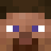
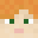
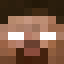
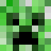
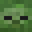
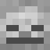
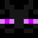
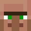
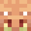
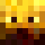
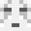
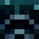
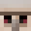
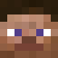

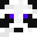
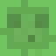
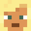
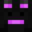
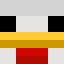
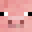
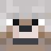
❓ QUIZ DE MINECRAFT
POR QUE MINECRAFT É TÃO ESPECIAL?
- 🔥 Jogo mais vendido: +300 milhões de cópias em todas as plataformas
- 🎮 Comunidade gigante: milhões de jogadores ativos mensais
- 🎨 Criatividade infinita: construções épicas, redstone e mods
- 📚 Educação: Minecraft Education usado em escolas do mundo todo
- 🌍 Cultura: influenciou jogos, memes e a internet como um todo
- 💎 Atualizações constantes: há mais de 15 anos de novo conteúdo